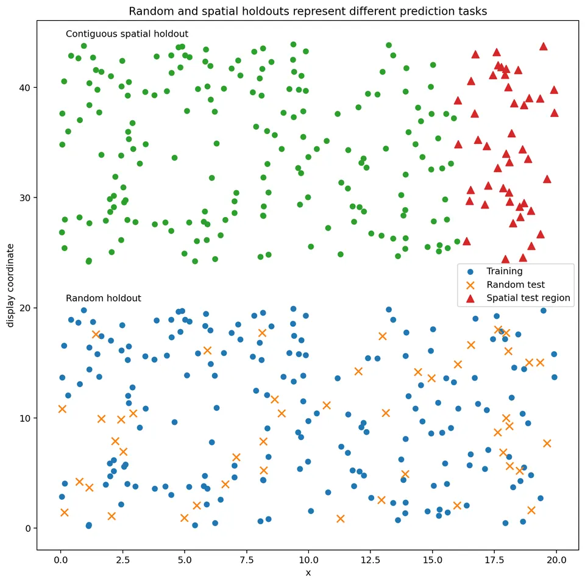
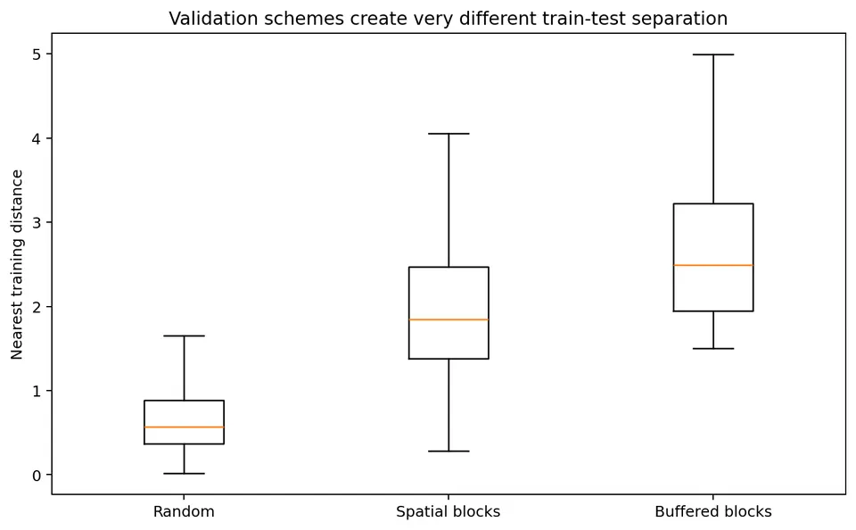
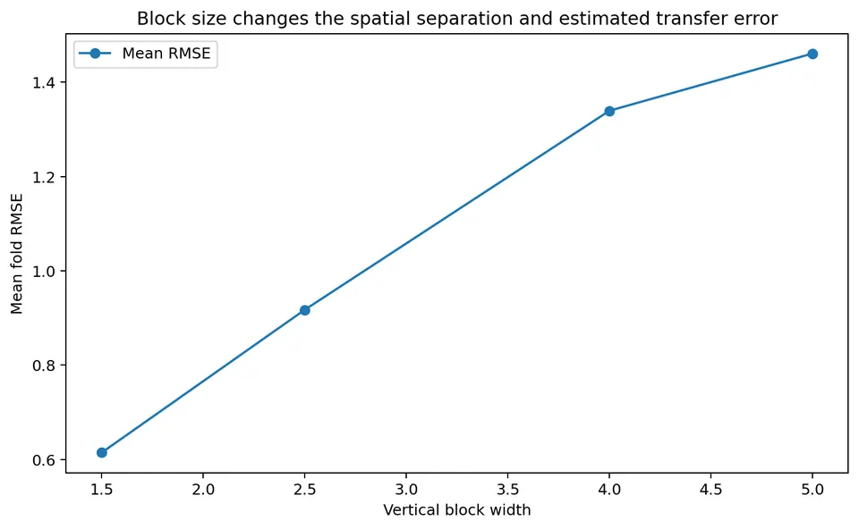
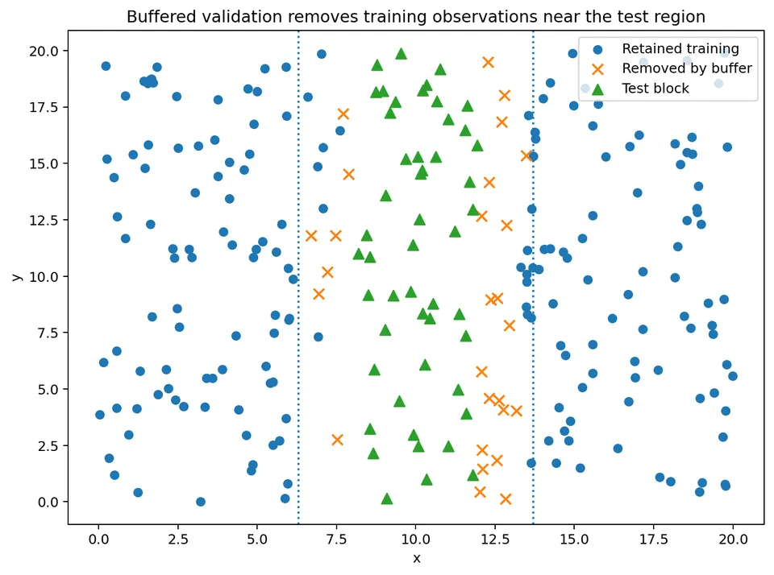
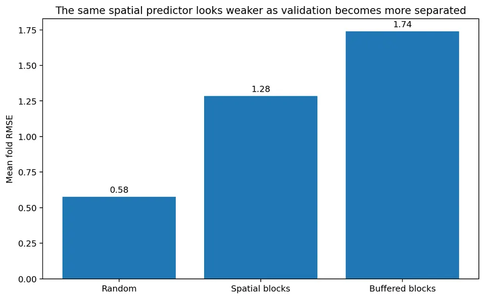
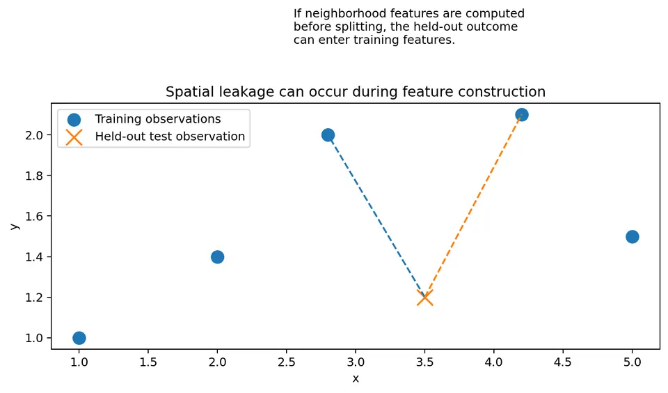
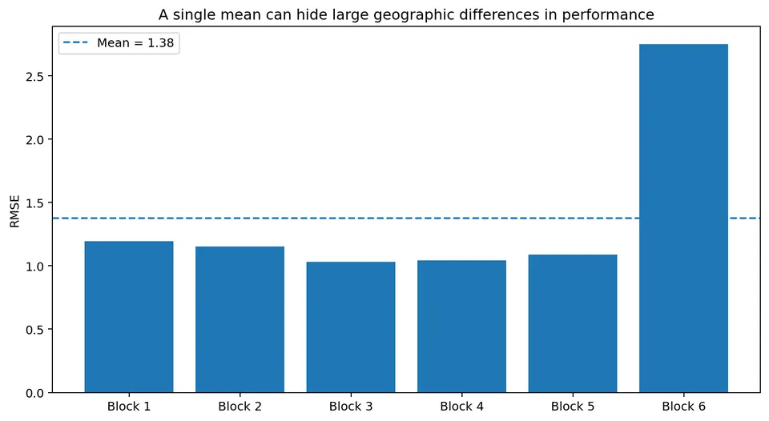

Spatial model performance depends not only on which observations are held out, but also on where those observations are located relative to the training data.
This makes spatial validation fundamentally different from ordinary random train/test splitting.
A random split often leaves test locations surrounded by nearby training observations, so it evaluates an interpolation-like task.
A geographically separated holdout asks a harder question:
Can the model predict where nearby observations are unavailable?
Neither design is universally correct. The appropriate validation design is the one that best reproduces the information conditions expected at deployment.
After this chapter, you should be able to:
Suppose a model is trained on observations
$$ \{(s_i,y_i):i\in\mathcal T\} $$
and tested on observations
$$ \{(s_j,y_j):j\in\mathcal V\}. $$
A validation score depends on more than the observations assigned to $\mathcal T$ and $\mathcal V$.
It also depends on the geometry:
$$ d(s_j,\mathcal T) = \min_{i\in\mathcal T} d(s_j,s_i). $$
This is the distance from test location $s_j$ to its nearest training observation.
For many spatial predictors, prediction becomes easier as this distance decreases.
Thus, two validation designs with the same number of test observations can represent very different prediction tasks.
Spatial validation should begin by defining the intended deployment setting.
Interpolation means predicting inside a region that is already well sampled.
A typical target location has nearby training observations.
Examples include:
A random split can sometimes approximate this situation because held-out observations remain close to training data.

Spatial transfer means predicting in a geographically distinct region that was not used for training.
Examples include:
A random split is usually too optimistic for this problem.
Blocked or leave-region-out validation is more appropriate.
The most difficult case occurs when a new region differs not only geographically, but also in predictor values or in the data-generating process.
Examples include:
This is extrapolation.
No resampling method can create evidence about conditions absent from the original dataset.
Validation can estimate extrapolation performance only when genuinely representative extrapolation regions exist in the data.
In a random split, observations are shuffled and assigned to folds without using geography.
This is the standard approach in many non-spatial machine-learning settings.
For independent observations, random splitting can be appropriate.
For spatially dependent observations, however, it can place training and test locations extremely close together.
This can create an easier task than the real deployment problem.
Suppose a test location is only
$$ 50\text{ m} $$
from a training observation.
If the spatial correlation range is
$$ 2\text{ km}, $$
the training observation contains substantial information about the held-out test value.
Now suppose real deployment occurs
$$ 10\text{ km} $$
from the nearest observation.
The validation and deployment settings are therefore not comparable.
The random split estimates:
performance when nearby training information is usually available.
The deployment task asks:
performance when nearby information is unavailable.
For each test observation $j$, calculate
$$ d_j = \min_{i\in\mathcal T} d(s_j,s_i). $$
Then summarize:
A validation design is more representative of transfer when these distances resemble those expected at deployment.

Suppose five test locations have nearest-training distances
$$ 0.2,\ 0.3,\ 0.4,\ 0.5,\ 0.6 $$
km under random CV.
The mean distance is
$$ \frac{0.2+0.3+0.4+0.5+0.6}{5} = \frac{2.0}{5} = 0.4\text{ km}. $$
Under blocked CV, suppose the distances are
$$ 2.1,\ 2.5,\ 2.7,\ 3.0,\ 3.2. $$
The mean is
$$ \frac{13.5}{5} = 2.7\text{ km}. $$
These two schemes evaluate very different levels of spatial separation.
A common approach is to partition the study area into geographic blocks and hold out one or more complete blocks.
For example, divide a rectangular region into:
The blocks should reflect the intended deployment question.
Suppose the region is divided into five spatial blocks.
For fold $k$:
Repeat for all five blocks.
This creates five geographically distinct validation tasks.
Very small spatial blocks can leave test observations almost adjacent to training observations.
This weakens the intended geographic separation.
Very large blocks create a harder transfer task but may leave too little training data.
The block size should reflect:

Suppose residual correlation becomes weak after approximately
$$ 5\text{ km}. $$
If validation blocks are only
$$ 500\text{ m} $$
wide, test observations near a block edge can still have strongly correlated training observations immediately outside the block.
The validation task remains close to interpolation.
Using blocks several kilometers wide may better assess geographic transfer.
There is no universal rule such as:
block size must equal exactly one variogram range.
The dependence range is one useful input, not an automatic choice.
A buffered split adds another layer of geographic separation.
After selecting a test region, remove training observations within distance
$$ b $$
of the test region.
The parameter $b$ is the buffer width.

Suppose a held-out test block is surrounded by training observations immediately outside its boundary.
Even when the test block itself is excluded, the task can remain easy.
A buffer imposes an explicit minimum separation.
If
$$ b=3\text{ km}, $$
training observations within 3 km of the test block are removed for that fold.
This asks:
How well can the model predict when nearby training information is unavailable?
Suppose a test site has a training observation
$$ 0.4\text{ km} $$
away.
With no buffer, that observation remains available.
With
$$ b=1\text{ km}, $$
it is removed.
Suppose the next nearest training observation is
$$ 2.3\text{ km} $$
away.
The effective test-to-training separation changes from
$$ 0.4 $$
to
$$ 2.3\text{ km}. $$
The validation task becomes substantially more difficult.
A larger buffer generally increases train-test separation but decreases the training sample size.
This creates a tradeoff between separation and available training data.
A very large buffer can produce unrealistic training sets with:
Buffer width should therefore reflect deployment conditions rather than being maximized mechanically.
A common prediction metric is root mean squared error:
$$ \boxed{ \mathrm{RMSE} = \sqrt{ \frac1m \sum_{j=1}^m (y_j-\hat y_j)^2 } }. $$
Smaller RMSE indicates better predictive accuracy on the response scale.
Suppose four test observations are
$$ y= \begin{bmatrix} 10\\ 12\\ 14\\ 16 \end{bmatrix} $$
and predictions are
$$ \hat y= \begin{bmatrix} 11\\ 11\\ 13\\ 18 \end{bmatrix}. $$
The errors are
$$ -1,\ 1,\ 1,\ -2. $$
Squared errors are
$$ 1,\ 1,\ 1,\ 4. $$
Their mean is
$$ \frac{7}{4} = 1.75. $$
Therefore
$$ \mathrm{RMSE} = \sqrt{1.75} $$
$$ \boxed{ \mathrm{RMSE}\approx1.323 }. $$
A spatial predictor can achieve:
$$ \mathrm{RMSE}_{\text{random}} = 0.7, $$
$$ \mathrm{RMSE}_{\text{block}} = 1.8, $$
and
$$ \mathrm{RMSE}_{\text{buffered}} = 2.4. $$
These results are not contradictory.
They describe different prediction tasks.
The correct question is not:
Which RMSE is the true one?
It is:
Which validation geometry resembles deployment?

Inverse-distance weighting is used here only to demonstrate validation geometry.
For a target $s_0$, the predictor is
$$ \hat y(s_0) = \frac{ \sum_{i\in\mathcal N_k(s_0)} w_i y_i }{ \sum_{i\in\mathcal N_k(s_0)}w_i }, $$
with
$$ w_i = \frac1{d(s_i,s_0)^p+\epsilon}. $$
Nearby training observations receive larger weight.
This is intentionally simple.
The purpose is not to recommend inverse-distance weighting as the preferred spatial model.
Its purpose is simply to make the effect of train-test distance easy to see.
Suppose a spatial process is smooth.
Then
$$ y(s) \approx y(s+h) $$
for small $h$.
If random CV leaves a training site very close to the test location, the model may recover much of the test value from local information.
A blocked split reduces that advantage.
This is why random CV often estimates interpolation skill rather than spatial transfer skill.
Validation can still be optimistic even when the split itself is geographically appropriate.
Leakage occurs whenever information from held-out observations enters the training pipeline.
Examples include:
All data-dependent operations should therefore be performed within each training fold.
Suppose the feature for location $i$ is
$$ x_i^{\text{nbr}} = \frac1{k} \sum_{j\in N_k(i)}y_j. $$
This feature directly uses neighboring outcomes.
If the neighborhood calculation is performed before splitting, a training row can contain information from a held-out test outcome.
The model has then indirectly seen the held-out outcome.
The correct procedure is:

The same principle applies to ordinary preprocessing.
If a transformation is estimated from data, it belongs inside the resampling loop.
Examples include:
This is ordinary machine-learning leakage with an added spatial dimension.
Leave-one-out kriging removes one sampled site and predicts it from all remaining sites.
This often leaves nearby observations in the training data.
It therefore mainly assesses local interpolation.
That may be exactly the right target for a densely sampled mapping problem.
It is not necessarily appropriate for transfer to a new geographic region.
Suppose a monitoring site is omitted.
Its two nearest remaining sites are only
$$ 150\text{ m} $$
and
$$ 220\text{ m} $$
away.
Leave-one-out kriging can perform very well.
But suppose the intended prediction area is
$$ 8\text{ km} $$
from the nearest monitor.
Leave-one-out accuracy does not directly estimate performance under that deployment setting.
A blocked or buffered holdout is more relevant.
Suppose the workflow is:
If steps 1–3 use the full dataset, the held-out observations influence the model structure before prediction.
That creates leakage.
For a clean estimate of the full modeling procedure, fit the variogram and covariance parameters using only the training observations in each fold.
Sometimes the goal is not to estimate the full model-selection pipeline.
For example, an analyst may want to compare prediction formulas conditional on a covariance model fixed externally from previous studies.
Then keeping that covariance model fixed can be scientifically justified.
The validation design should state clearly which components are fixed and which are re-estimated.
Suppose block size, model type, or hyperparameters are chosen by cross-validation.
If the same folds are then used to report final performance, the estimate can be optimistic because those folds influenced model selection.
A stronger design is:
This is the spatial analogue of nested validation.
If the dataset is large enough, reserve a final geographic region that is never used for:
Use it only for the final performance estimate.
This design most closely approximates a future geographic deployment.
Suppose training temperature values lie between
$$ 10^\circ C $$
and
$$ 25^\circ C. $$
Deployment will occur in a region with temperatures
$$ 35^\circ C $$
to
$$ 40^\circ C. $$
Random or blocked resampling of the original data cannot evaluate model behavior at 40°C because such conditions are absent.
The data simply do not contain empirical evidence for that regime.
This is a support problem, not a problem that can be solved by a more elaborate cross-validation scheme.
Spatial transfer should therefore assess not only geographic separation but also predictor overlap.
For each test region, ask:
A geographically separated test set can still represent interpolation in covariate space.
Conversely, a geographically nearby test site can still be extrapolative if its predictor values are novel.
Suppose five spatial blocks have RMSE:
$$ 1.0,\ 1.1,\ 1.3,\ 2.8,\ 3.1. $$
The mean is
$$ \frac{1.0+1.1+1.3+2.8+3.1}{5} = 1.86. $$
Reporting only
$$ \text{mean RMSE}=1.86 $$
can hide substantial geographic heterogeneity.
Two regions are substantially harder than the others.

Adjacent or ecologically related blocks can share:
Five folds are therefore not equivalent to five independent experiments.
A standard error calculated as though the folds were iid replicates can give a misleading sense of precision.
Report:
Suppose average RMSE is acceptable but one important region performs very poorly.
If deployment includes that region, the average alone may be insufficient.
Validation should examine the distribution of errors across:
The reported metrics should support the actual decision.
Suppose a process changes mainly east-to-west.
Vertical holdout strips may create stronger extrapolation than horizontal strips.
If transport follows a river or prevailing wind, directional blocking may be scientifically meaningful.
Spatial validation geometry should follow the expected deployment mechanism whenever possible.
Natural regions can sometimes provide more meaningful folds than arbitrary geometric blocks.
Examples include:
Leave-one-region-out validation asks:
Can the model transfer to a genuinely new region of the same type?
This is often easier to interpret scientifically than arbitrary geometric blocking.
A single blocking scheme can be sensitive to arbitrary boundary placement.
One response is to repeat spatial blocking with different:
This reveals how sensitive the results are to validation geometry.
However, repeated folds are still not independent experiments.
The purpose is robustness analysis, not artificial inflation of the effective sample size.
Instead of choosing a single buffer width, compare several plausible values:
$$ b=0,\ 1,\ 2,\ 4\text{ km}. $$
If performance degrades sharply as $b$ increases, the model relies strongly on very local training information.
This can be scientifically informative.
It answers:
How quickly does predictive skill decay as we remove nearby observations?
Similarly, evaluate several block sizes.
Small blocks may approximate interpolation.
Larger blocks approximate increasingly difficult transfer.
The resulting curve is not merely a tuning exercise.
It shows how prediction performance changes as spatial separation increases.
This can be more informative than a single cross-validation score.
A useful report might include:
| Scheme | Deployment interpretation |
|---|---|
| Random CV | interpolation among sampled locations |
| Small blocks | local transfer |
| Large blocks | regional transfer |
| Buffered blocks | prediction with explicit minimum separation |
| Leave-region-out | transfer to a new natural region |
| Final geographic test | closest approximation to final deployment |
These designs answer different questions.
Do not rank them by difficulty and assume that the hardest design is automatically the most appropriate.
Write down:
Inspect:
Use:
This helps inform block and buffer sizes.
Select:
Prevent both spatial and ordinary leakage.
When estimating the full modeling procedure, refit:
Summarize nearest-training distances.
Do not report only the overall mean performance.
Check whether held-out conditions are represented in training.
Keep model selection separate from final evaluation.
Random CV usually leaves nearby training observations available.
Test observations can remain almost adjacent to training data.
A buffer should mimic the real information gap rather than maximize difficulty.
This can leak held-out information into training.
The test fold influences covariance estimation.
Regional variation may be large.
Spatial folds often share broad processes.
It does not create evidence for predictor conditions absent from the dataset.
Model selection can make reported performance optimistic.
Suppose a spatial model is evaluated three ways.
Median test-to-training distance:
$$ 0.3\text{ km}. $$
RMSE:
$$ 0.8. $$
Median distance:
$$ 2.5\text{ km}. $$
RMSE:
$$ 1.6. $$
Median distance:
$$ 4.2\text{ km}. $$
RMSE:
$$ 2.1. $$
A useful interpretation is:
Predictive error increases as nearby training information is removed. The random-CV result describes local interpolation, while the buffered result is more representative of prediction several kilometers from sampled sites.
A poor interpretation is:
Buffered CV proves the model is bad.
The model may perform very well for interpolation but poorly for transfer.
The logic of spatial validation is
$$ \text{deployment question} $$
$$ \downarrow $$
$$ \text{expected geographic separation} $$
$$ \downarrow $$
$$ \text{choose random / block / buffer / region holdout} $$
$$ \downarrow $$
$$ \text{fit all preprocessing using training only} $$
$$ \downarrow $$
$$ \text{predict held-out geography} $$
$$ \downarrow $$
$$ \text{calculate performance + train-test distance} $$
$$ \downarrow $$
$$ \text{inspect fold-level geographic variation} $$
$$ \downarrow $$
$$ \text{compare validation geometry with real deployment}. $$
The central lesson is:
A spatial validation score is meaningful only when the train-test geometry resembles the prediction problem we actually care about.